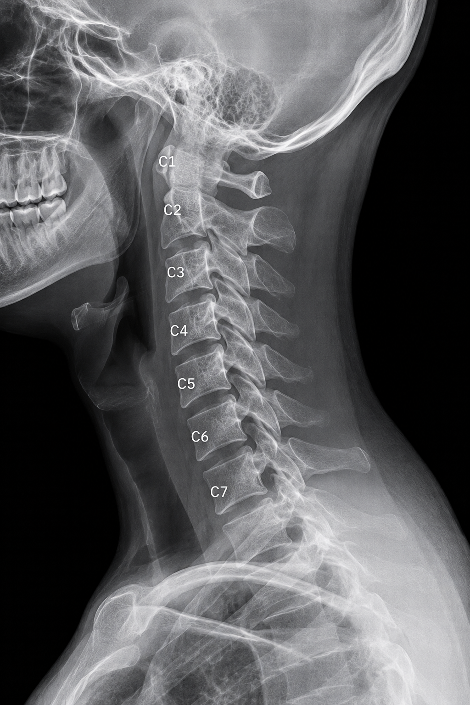

Cervical Artificial Disc Replacement (ADR)
A motion-preserving alternative to fusion for single or two-level cervical disc disease. The ILT Spine implant restores normal segmental movement and load sharing, maintaining the natural mechanics of your neck.

What is Cervical Artificial Disc Replacement?
Cervical Artificial Disc Replacement (ADR), also called total disc arthroplasty, is a surgical procedure that replaces a worn or damaged cervical disc with an artificial implant designed to mimic the natural movement of your spine.
Key Concept
Unlike fusion, which locks two vertebrae together, disc replacement aims to restore segmental motion. This preserves the natural biomechanics of your cervical spine and reduces stress on the discs above and below the treated level.
When ADR is Indicated
- Single or two-level cervical disc disease
- Symptomatic disc herniation causing nerve compression
- Degenerative disc disease without advanced arthritis
- Patients seeking to preserve neck mobility
Patient Selection
- Good general health and acceptable surgical candidate
- No severe facet joint arthrosis (osteoarthritis)
- No significant spinal instability
- Commitment to post-operative physiotherapy
Surgical Approach & Anatomy
Cervical disc replacement uses the same proven anterior approach as fusion, with minimal tissue disruption.
The Anterolateral Approach
Your surgeon accesses the cervical spine from the front of the neck, following the natural anatomy to minimize disruption to surrounding structures.
Anatomical Pathways
- Incision location — along a natural skin crease on the front of the neck for better cosmetic outcome
- Dissection pathway — splits the space between midline structures (trachea and esophagus) and the lateral neurovascular structures (carotid sheath)
- Posterior structures — spinal cord and nerve roots are protected throughout the procedure
- Muscle preservation — posterior neck muscles are not disturbed, reducing recovery time
The Surgical Procedure
Cervical disc replacement follows these key steps to safely remove the damaged disc and restore motion.
-
Surgical exposure
A small incision is made in the front of the neck along a natural skin crease. The surgeon carefully separates soft tissues to expose the damaged intervertebral disc, protecting the trachea, esophagus, and carotid artery.
-
Disc removal
The damaged disc material is completely removed down to the posterior longitudinal ligament. Any bone spurs (osteophytes) compressing the nerve or spinal cord are carefully removed using specialized instruments.
-
Space preparation
The disc space is sized and prepared to determine the correct footprint and height for your ILT Spine implant. This ensures optimal fit and positioning between the vertebrae.
-
Implant placement
The artificial disc is carefully positioned in the disc space, immediately restoring height and alignment. The implant's articulating design allows natural movement in all directions.
-
Closure and recovery
The incision is closed with stitches. Unlike fusion, no additional hardware or bone graft is needed. This simpler approach typically results in faster recovery with preserved motion.
Benefits of Motion Preservation
Keeping your cervical spine mobile offers distinct advantages over fusion.
For Your Neck
- Maintains natural flexion, extension, and rotation at the treated level
- Preserves segmental load sharing with adjacent levels
- Reduces accelerated wear on discs above and below
- Maintains natural cervical curves and biomechanics
For Your Lifestyle
- Better long-term neck mobility and function
- Reduced risk of adjacent-level disc degeneration
- Faster return to normal activities
- No restrictions on movement post-recovery
Motion preservation is the key advantage. Studies show that maintaining segmental motion reduces the risk of additional spine surgery at adjacent levels compared to fusion, particularly for patients with a long life expectancy.
Common Questions
Questions patients often ask about disc replacement.
How is ADR different from ACDF?+
ACDF (fusion) removes the disc and locks the two vertebrae together with bone and hardware. ADR removes the disc but replaces it with an artificial implant that allows continued motion. ADR is best for patients with single- or two-level disease who want to preserve mobility; ACDF may be chosen when fusion is more appropriate.
Will my neck feel completely normal again?+
Most patients regain comfortable, functional motion during recovery and physiotherapy. The goal is to restore enough movement for daily activities, though some patients notice subtle differences compared to before symptoms began. Most report excellent functional outcomes.
How long does recovery take?+
Initial healing takes 6 weeks; return to desk work is typically possible within 2–6 weeks. Progressive physiotherapy starts around 6 weeks and continues for 3–6 months. Return to full activity, including sport, is usually possible by 3–6 months if cleared by your surgeon.
What if I need surgery at another cervical level later?+
One of the benefits of ADR is reduced risk of adjacent-level disease compared to fusion. If additional surgery becomes necessary years later, the presence of a prior artificial disc is not a contraindication — your surgeon can address new pathology as needed.
Are there any activity restrictions after ADR?+
After full recovery, there are no permanent restrictions on motion or activities. Some high-contact or collision sports may require discussion with your surgeon, but most patients resume normal recreation and work without limitation.
Ready to discuss your options?
Talk to your surgeon or contact your care team about whether cervical disc replacement is right for you.